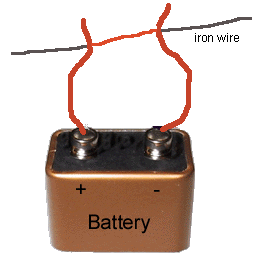

Preparation: Electric Circuits/Basic Facts/Simulate It/Demo. Go to Page 2 of this Demo session.
Here is an experiment on short circuits that you can do at home. From it you can learn something about resistance and current and circuits in general.

Explanation. Iron (or steel) has a greater resistivity than copper. This means that if you have two wires that are identical in length and in diameter, but one of them made of iron and the other one of copper, then the copper wire will have quite a bit less resistance than the iron wire. In this experiment we have an iron wire that is much thinner than the copper wires and therefore has an even greater resistance than the copper wires. Thus, if there is several centimeter of iron wire between the contact points, there is still some resistance in the circuit and we don't have a short circuit quite yet.
However, the shorter you make the piece of iron wire between the contacts, the smaller the resistance in the circuit will become and you will have more and more of a "short circuit". As the resistance in the circuit gets smaller, the current gets larger. As the current in a resistor increases, more power is dissipated in the resistor and the resistor gets hotter. The power dissipated in a resistor depends on two things: the current in the resistor and the resistance of the resistor. The reason the copper wires do not get as hot as the steel wire even though they carry the same current is that the copper wires do not have as much resistance per unit length as the steel wire.